GEOTEX BAROKAH ABADI adalah penyedia geosintetik murah berkualitas. Menunjang fondasi infrastruktur Indonesia dengan rentang produk lengkap mulai dari Geotextile, Geobag, hingga Geomembrane.
Standar Mutu Tinggi
Distribusi Nasional
Langsung Distributor
GEOTEX BAROKAH ABADI adalah distributor dan supplier produk Geosynthetics yang murah, andal, dan tepercaya. Kami membangun reputasi melalui dedikasi kami untuk menyediakan produk berkualitas tinggi secara konsisten untuk segala kebutuhan proyek infrastruktur Anda.
Kami memahami bahwa konstruksi jalan, proteksi lereng, dan penguatan struktur tanah dasar membutuhkan jaminan material kelas satu. Fokus kami pada pemenuhan standar tinggi, harga yang terjangkau, dan ketepatan pengiriman memungkinkan kami menjadi mitra terbaik dalam solusi perkuatan konstruksi Anda.
Jelajahi Solusi Kami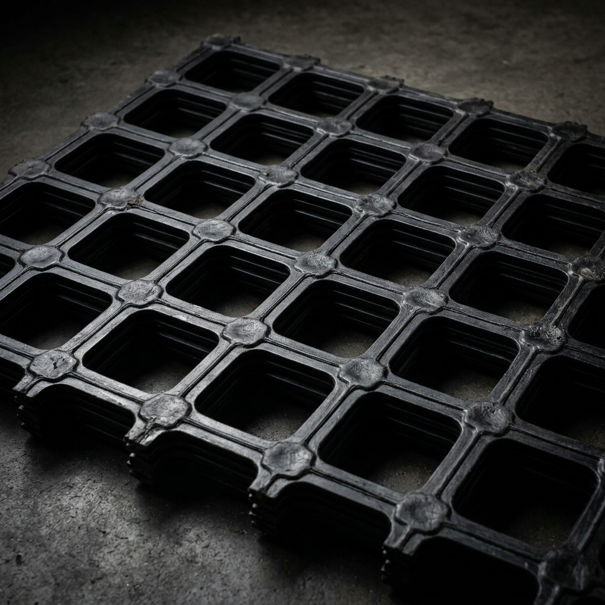
Empat keunggulan utama material geosintetik dalam proyek konstruksi, memastikan efisiensi biaya dan daya tahan tinggi.
Membatasi pergerakan tanah halus sambil memungkinkan air mengalir secara konstan. Sangat esensial dalam stabilisasi tepi sungai atau lereng.
Mampu mengalirkan air ke segala arah secara cepat, mencegah penggenangan, serta memperbaiki permeabilitas tanah dasar proyek Anda.
Mencegah bercampurnya tanah urugan baru dengan material dasar rawa/lumpur. Ketahanan material kami memastikan perlindungan jangka panjang.
Meningkatkan stabilitas kuat tarik ke sistem tanah, mendistribusikan beban secara proporsional sehingga mencegah terjadinya penurunan setempat.
Pilihan material geosintetik terbaik untuk menunjang kekuatan dan efisiensi proyek tanah Anda.
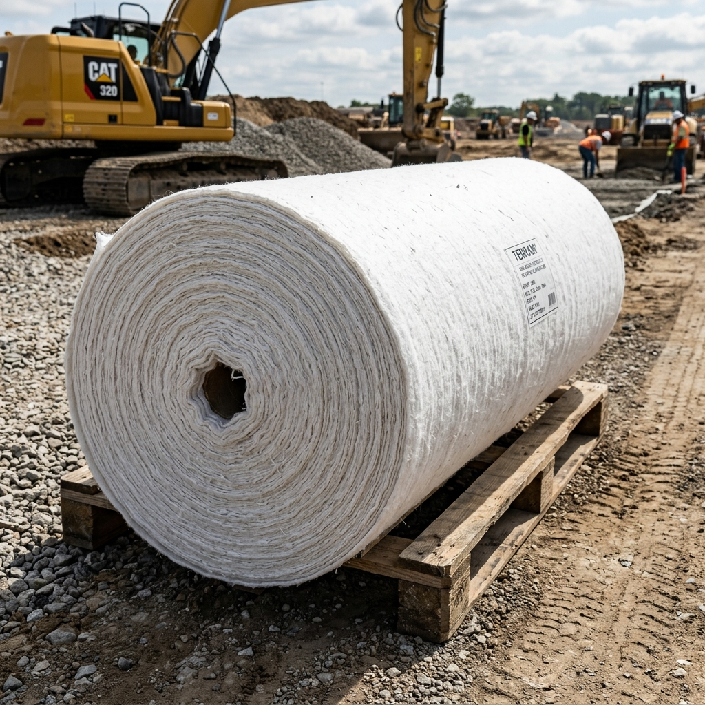
Material seperti karpet atau kain tanpa anyaman berbahan polyester (PET) atau polypropylene (PP). Sangat unggul untuk filtrasi dan separasi lapisan tanah lunak.
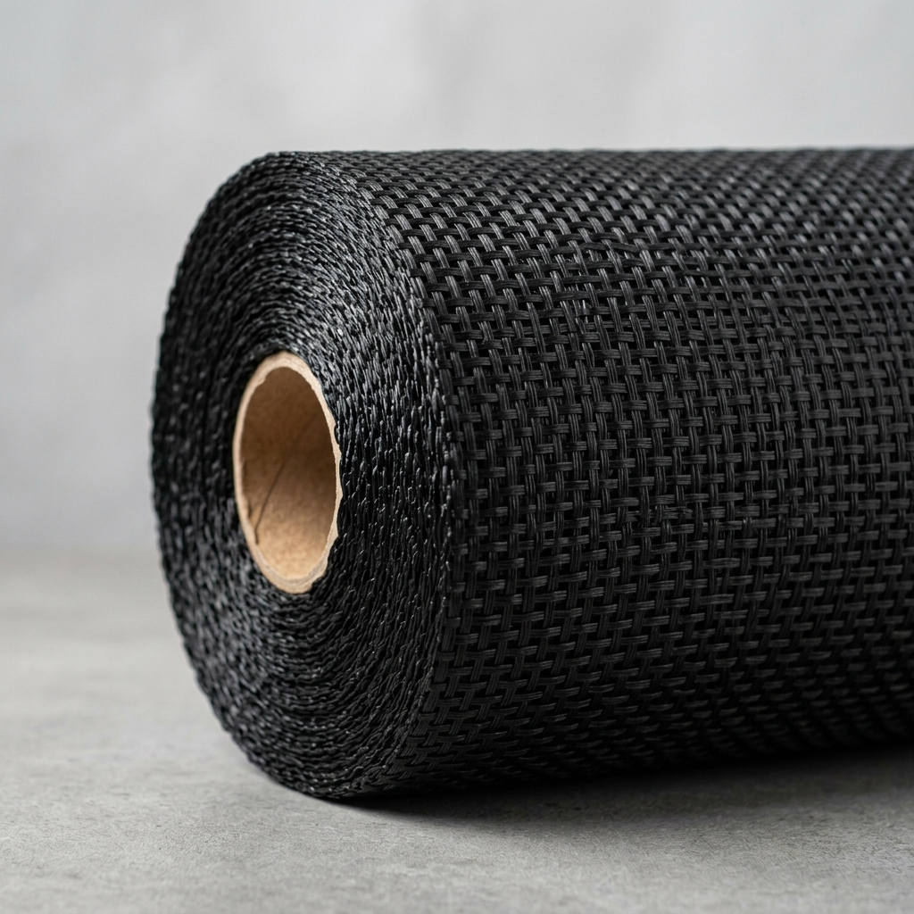
Bahan lembaran anyaman plastik (menyerupai karung beras) bertensi tinggi. Solusi utama untuk stabilisasi tanah dasar yang lunak seperti lahan gambut.
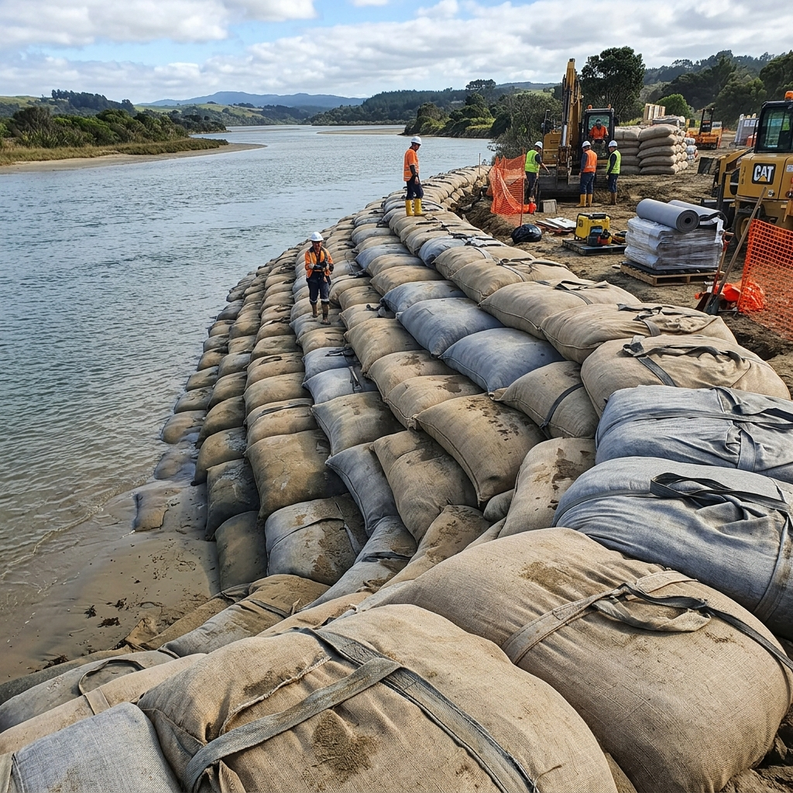
Wadah penahan material yang sangat tahan abrasi dan cuaca. Sering digunakan untuk perlindungan tepi tebing, bendungan, breakwater, dan pesisir pantai.
Jaring perkuatan polymer berbentuk panel kokoh (PP/HDPE). Mengunci agregat struktur tanah gembur dan menyebarkan beban secara merata untuk perkerasan.
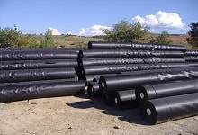
Bahan penahan air terbuat dari HDPE. Tahan terhadap korosi, asam, dan panas. Pengganti beton unggul untuk penampungan limbah, tambak, atau waduk air.
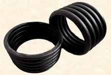
Pipa bergelombang (corrugated) berlubang. Solusi cerdas "Subdrain System" untuk menampung dan mengalirkan air berlebih dari dalam struktur tanah Anda.
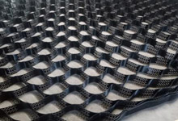
Panel penahan tanah sarang lebah 3D HDPE. Direkomendasikan untuk stabilitas beban di lahan miring ekstrim, mempercepat revegetasi vegetasi tanah.
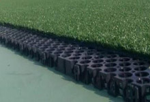
Blok drainase ringan pengganti kerikil. Menangani resapan air untuk Roof Garden dan lapangan sintetis agar terbebas dari masalah kebanjiran permanen.
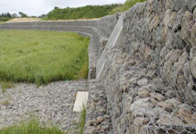
Kawat anyaman hexagonal bersertifikasi (Gabion). Perlindungan struktur tahan longsor, jembatan, dan jalan yang dilintasi arus sungai kencang.
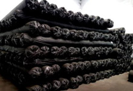
Kombinasi material perkuatan dan drainase kelas atas.
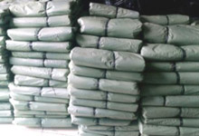
Material pelindung landasan pengecoran lantai kerja, anti air dan menjaga kekuatan cor.
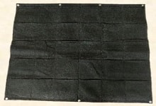
Geotextile khusus kantong tanam vertikal. Cocok untuk penghijauan pada dinding beton & arsitektural.
Mencari produk seperti Geomembrane, Geopipe, Plastik Cor, atau Bronjong?
Hubungi Tim Sales KamiDapatkan standar kualitas mutu yang dijamin dengan penawaran harga paling ekonomis.
Komitmen kami adalah kepuasan Anda. Kami siap merespons kebutuhan proyek secara responsif.
Pemrosesan canggih untuk ketahanan ekstra pada tekanan, asam, dan keausan.
Siap mendukung pasokan kelancaran konstruksi berskala nasional dengan tepat waktu.
Dapatkan wawasan mendalam mengenai spesifikasi teknis dan fungsi instalasi produk geosintetik.
Geotextile Woven ditenun rapat laiknya karung beras, sangat unggul untuk menahan beban tarikan (stabilisasi tanah dasar). Sedangkan Non Woven berbentuk seperti karpet beludru, berfokus maksimal terhadap daya saring (filtrasi) dan jalur lewatnya air (drainase).
Material Geomembrane HDPE sangat kedap air, tahan terhadap limbah asam korosif pabrik, maupun paparan sinar UV ekstrem. Hal ini krusial untuk mencegah rembesan limbah ke dalam tanah, sekaligus mengunci volume air murni pada tambak modern.
Didedikasikan untuk menjaga kualitas pengiriman berbagai wilayah.
Penyedia Geobag / Sandbag berkualitas untuk antisipasi longsor dan abrasi di area perbukitan Jawa Barat.
KONSULTASISupply Non-woven skala besar untuk proyek perbaikan jalan tol dan drainase resapan area Bandung Raya.
KONSULTASIDistributor tangan pertama Geomembrane HDPE penahan limbah pabrik industri dan konstruksi sipil Banten.
KONSULTASI